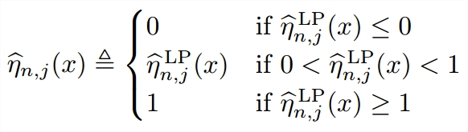

Reducing File System Tail Latencies with Chopper
We present Chopper, a tool that efficiently explores the
vast input space of file system policies to find behaviors
that lead to costly performance problems. We focus
specifically on block allocation, as unexpected poor
layouts can lead to high tail latencies. Our approach
utilizes sophisticated statistical methodologies, based on
Latin Hypercube Sampling (LHS) and sensitivity analysis,
to explore the search space efficiently and diagnose
intricate design problems. We apply Chopper to study the
overall behavior of two file systems, and to study Linux
ext4 in depth. We identify four internal design issues in
the block allocator of ext4 which form a large tail in the
distribution of layout quality. By removing the underlying
problems in the code, we cut the size of the tail by an
order of magnitude, producing consistent and satisfactory
file layouts that reduce data access latencies.
Jun He,
Duy Nguyen, Andrea C. Arpaci-Dusseau, Remzi H. Arpaci-Dusseau
The 13th USENIX Conference on File and Storage Technologies (FAST '15), Acceptance rate 28/130 = 21.5%

Learning From Non-i.i.d. Data: Fast Rate for the One-vs-All Multiclass Plug-in Classifier
We prove new fast learning rates for the one-vs-all multiclass plug-in classifiers
trained either from exponentially strongly mixing data or from data generated by a
converging drifting distribution. These are two typical scenarios where training data are not
iid. The learning rates are obtained under a multiclass version of Tsybakov's margin
assumption, a type of low-noise assumption, and do not depend on the number of classes.
Our results are general and include a previous result for binary-class plug-in classifiers
V Dinh, LST Ho, NV Cuong,
Duy Nguyen, BT Nguyen
Theory and Applications of Models of Computation, 2015